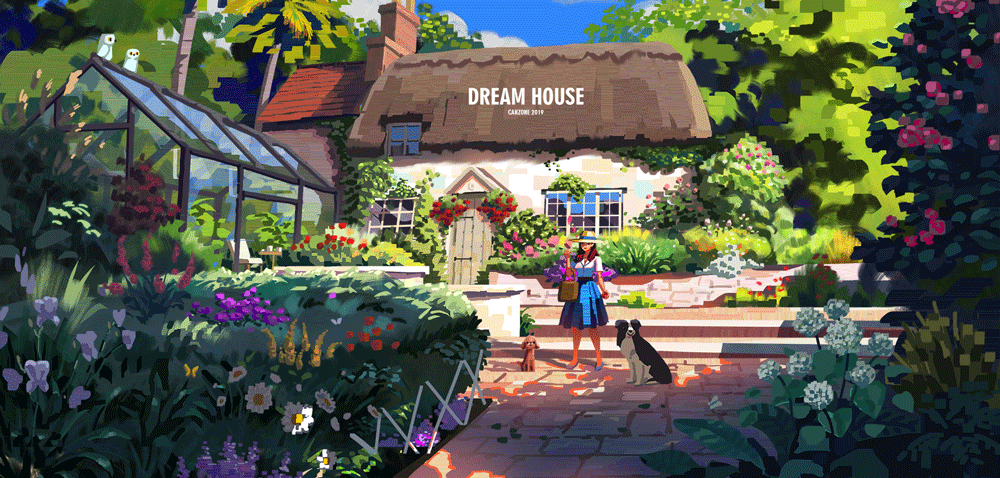

Mulailah Petualangan seni musik Anda Hari Ini!
Bergabunglah dengan Solo-Music dan temukan dunia seni musik yang penuh warna. Dengan alat yang mudah digunakan dan komunitas yang mendukung, Anda akan segera menciptakan karya seni yang menakjubkan.

Pengenalan alat musik umum (Easy)
Pelajari dasar-dasar seni musik dengan tutorial interaktif dan latihan seru.
Mulai Belajar
Seni Musik 202 (Medium)
Pelajari dasar-dasar seni musik dengan tutorial interaktif dan latihan seru.
Mulai Belajar
Pengenalan dan cara membaca notasi musik (Hard)
Pelajari dasar-dasar seni musik dengan tutorial interaktif dan latihan seru.
Mulai Belajar.gif)
Seni Musik 202 (Easy)
Pelajari dasar-dasar seni musik dengan tutorial interaktif dan latihan seru.
Mulai Belajar


Seni Musik 404 (Hard)
Pelajari teknik lanjutan dan buat karya Seni Musik yang kompleks.
Mulai Belajar